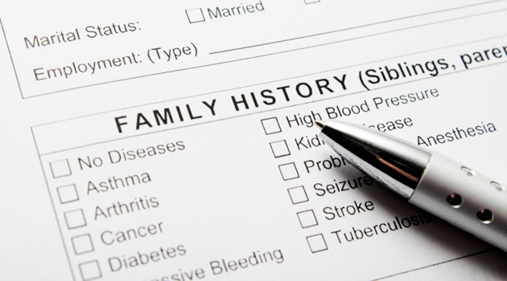
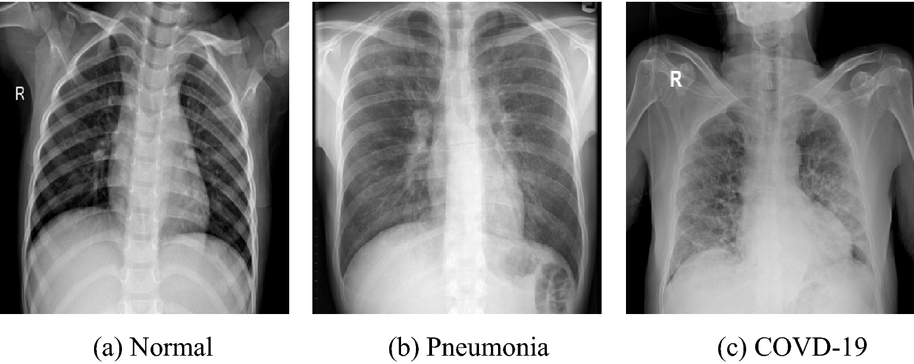

I am a Data Solutions Analyst with a Master's in Data Science from Bellevue University.
For the past three years I have gained a strong foundation in data analysis, data exploration, and machine learning. I have expertise using a wide variety of tools
such as Python, R, SQL, Tableau, and Power BI.
I have worked on projects at every step of the data science process and have cultivated my skills to be applicable to a wide-range of topics. From healthcare to
travel, media to politics, or natural science to maintenance, I am skilled at combining domain knowledge and analytical methods to build machine learning solutions that are informed by the data and
the environment in which the solution will be deployed.
I am most interested in the ethical and political uses of data science, In my current role, I perform research and analysis on data involving involving child welfare services to
build robust and data-guided assessments for more equitable outcomes for children who interact with social services.
An EDA project which takes datasets from different sources, concatenates them, and performs a variety of visualizations to look for the relationship between a country’s population and their emission rates.

Given a dataset of medical information for patients with and without ALS, this project conducts a cluster analysis to look for unknown relationships that influence the emergence of ALS in patients.
An EDA project which investigates the question of how the war on terror affected global terrorism rates.

Using K Nearest Neighbor, this model takes a movie as input and outputs ten movie recommendations that were similarly liked by other viewers.
A full data science project from data preparation to data understanding, to modeling, to evaluating. In this project a random forest model is built to predict whether a machine will fail or not.

This project consists of building, evaluating, and comparing three different sentiment analysis models which attempt to predict whether a movie review is positive or negative.
An autocorrelative model is built to predict future retail sales.
Using a random forest classifier I build a model to predict whether a given news article is true or false.

A convolutional neural network is built using a dataset of chest X-Rays classified into Covid, Normal, and Viral Pneumonia to accurately classify Covid-19 cases

This project tests out different image classification models from CNN to ResNet50 and evaluates them to better understand the differences between them.